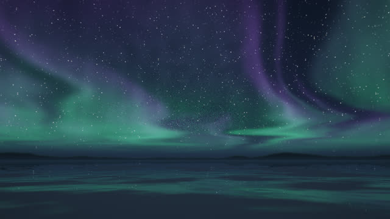
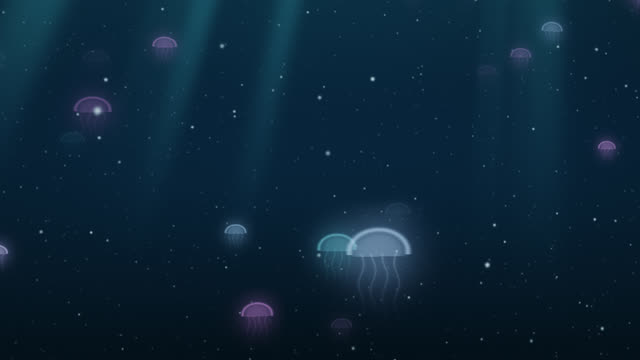
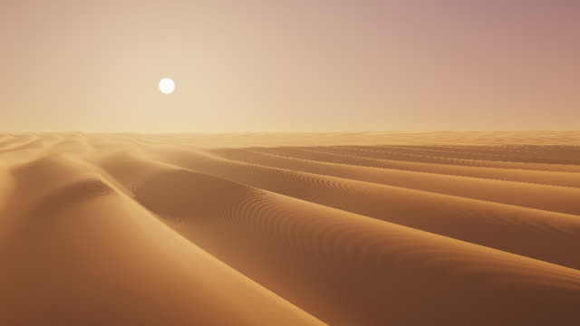
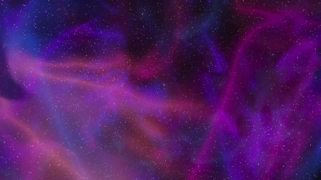

Infinite Ambient
Endless scenes that you drift through. Each has an instrumental soundtrack adapted from a classical recording. The music loops in the browser and the scenes can stay on all day as a live wallpaper.

Aurora Drift
A frozen lake under the northern lights.
Soft solo piano after Debussy’s Clair de lune.

Abyss
Drifting through the deep sea.
Submerged strings after Bach’s Cello Suite No. 1 prelude.

Dune Sea
Endless dunes at the golden hour.
Sparse, warm tones after Satie’s Gymnopédie No. 1.

Nebula Drift
Through the clouds between the stars.
Slowly overlapping tones after Pachelbel’s Canon in D.
Nightscape
Floating above a sea of clouds at night.
A felt piano and a soft choir in D, over the wind.
A fork of WeebLabs/Nightscape with added music
Using a scene
Sound starts when you click or press a key. Browsers do not play sound before that.
G settings · F or a double-click for full screen · S sound on and off · Esc closes the settings
The settings panel sets the volume, the music and the ambience separately, the frame rate (15, 30 or 60 fps) and the resolution. Each scene remembers its own settings.
As a wallpaper
Windows: Lively Wallpaper (free) can show a web page as the desktop. Add a scene by its address.
macOS: Plash (free) can show a web page as the desktop.
Any system: open a scene in its own full-screen browser window. To let Chrome start the sound without a click, start it with
--autoplay-policy=no-user-gesture-required.The scenes are built to run for days: the frame rate is capped at 30 fps by default, drawing stops while the page is hidden, the resolution adapts to the graphics card, and a lost graphics context is rebuilt.